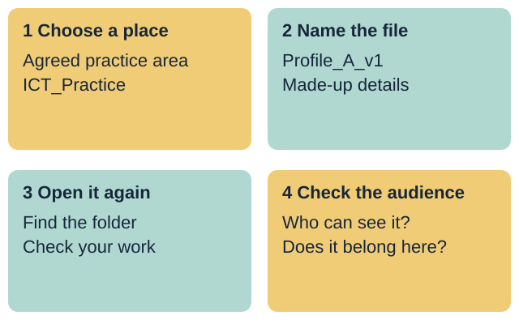
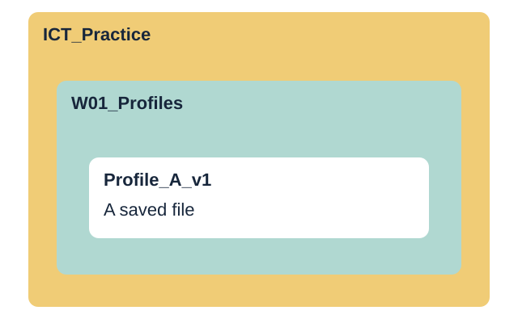
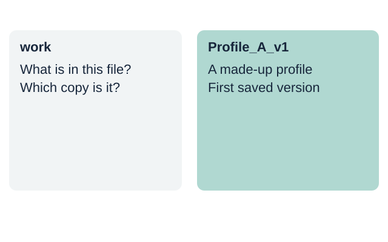
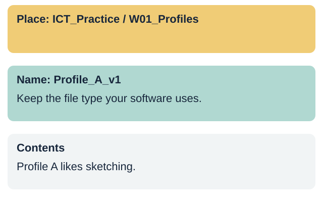
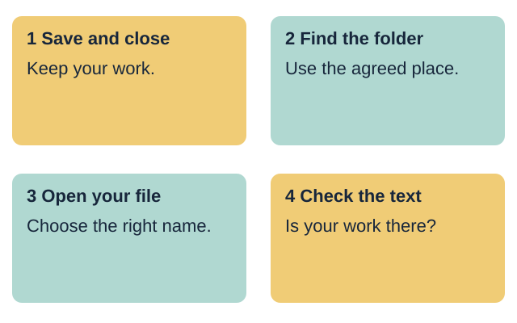
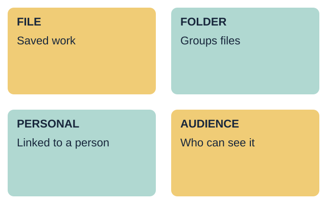
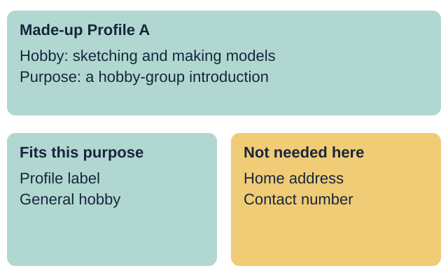
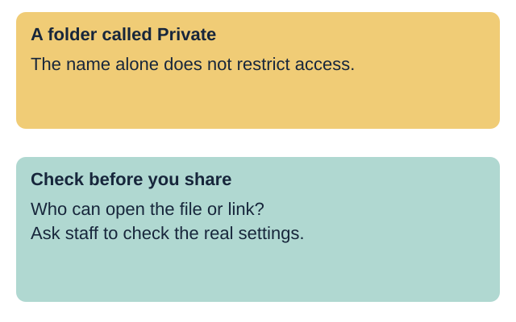
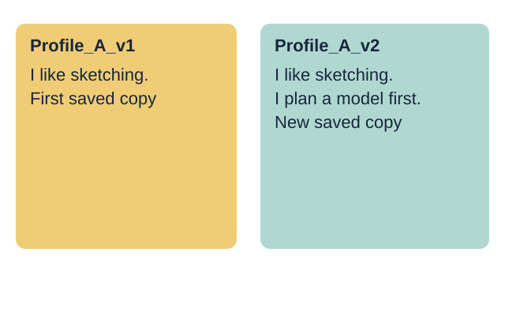
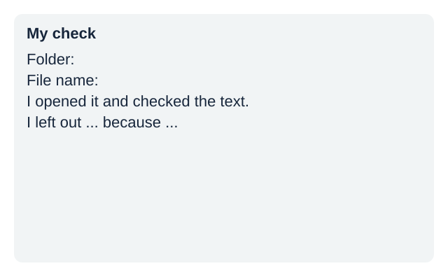

LAUNCH ICT
Year A | Autumn 2 Week 1 | 2 November 2026
Identity & Belonging

Year A | Autumn 2 Week 1 | 2 November 2026
Identity & Belonging
I can save and find a file.
I can choose what to share.
I will use a made-up profile.
I will check who can see my work.

Your response: Point to the skill you want to practise.
Introduce the 40-minute lesson. State that Profile A and Profile B are made up. No pupil should enter real names, dates of birth, addresses, contact details or passwords.
A file holds work, such as text or a picture.
A folder groups files in one place.
What helps you find the right file?
Point, say or sketch your answer.

Your response: Show the folder and the file in the picture.
Accept a word, gesture or brief explanation. Check the difference between a file and a folder. A folder name does not set access permissions.
Choose a file name and give a reason.
Profile_A_v1 gives a clear clue to its contents and version.
A useful file name does not need your real name.

Your response: Choose work or Profile_A_v1. Say why.
Present work and Profile_A_v1 as names without extensions. The second shows the content and version. A good name need not include a real person's name.
Make the W01_Profiles folder in ICT_Practice.
Save the made-up profile as Profile_A_v1.

Your response: Point to the place where the file will go.
In a staff-approved practice area, demonstrate creating the parent and lesson folders, then a short document. Show Save As or the local equivalent. Retain the document type chosen by the software. Spell out the folder path. This is a demonstration, not a screenshot of any named software.
Close the file. Find it in the folder.
Open it. Check that your work is there.

Your response: Say what you must check after you open it.
Save before closing. Open via the folder rather than a recent-files list. Show that an empty or old file is not successful evidence. If changes are missing, use the last saved copy and repeat the step. Do not delete originals.
file: work saved with a name
folder: a place to group files
personal: linked to a person
audience: the people who can see it

Your response: Explain one word using the picture.
Teach each term aloud. A hobby can be personal information too. Its suitability for sharing depends on purpose, audience and detail. Do not imply that a folder protects data.
Profile A likes sketching and making models.
Does this group need a home address?
A general hobby fits this task.
A home address is not needed for this introduction.
Check the purpose and audience before sharing personal details.

Your response: Choose one detail to keep and one to leave out.
Use the supplied fictional cards only. Purpose: a hobby-group introduction viewed by the group. Keep a fictional profile label and general hobby. Leave out home address, contact number, full birth date and password. The exercise labels sensitive detail types without inventing usable contact data.
Check who can open the file or its link.
If unsure, pause and ask before sharing.
The folder name does not control who has access.
Use an approved location and ask staff to check access.

Your response: Explain why a folder called Private is not proof.
Staff model an approved storage location without exposing real accounts or personal files. Access depends on the actual permissions and sharing settings. Do not ask pupils to change account settings or publish anything. Do not demonstrate a live public link.
Supported: use the step cards with help.
Independent: use the task brief.
Aspire: add a second version and explain it.
Keep your own file and check it opens.
Your response: Choose a route, then show your saved file.
Slides 10-13 share this 12-minute task time. Each pupil completes the same core checks. With one device, alternate operator and checker after six minutes, using Profile A then Profile B. Do not let one pupil's file stand as evidence for both.
Choose the made-up Profile A or Profile B.
Use the step cards to make your folder.
Write the label and one general hobby.
Save it. Close it. Find and open it.
Say one detail you left out and why.
Your response: Show one step you completed yourself.
Offer a pre-opened blank document, enlarged pointer and one instruction at a time. Staff can scribe exact pupil words. Record the support actually given. The pupil still points to the save location and confirms reopened content.
Make the folder in the agreed place.
Write a short made-up hobby profile.
Use a clear file name with v1.
Close it. Find and open the saved file.
Explain your choice about one private detail.
Your response: Show the folder, file name and reopened text.
Use the brief and checklist without routine prompting. Ask for a reason linked to the audience or purpose. If a pupil needs help, provide it and record it rather than lowering the evidence standard silently.
Complete the Independent task first.
Add one useful sentence for the group.
Save a new copy with v2 in its name.
Open v1 and v2. Explain the change.
Say how you would check who can see it.

Your response: Compare the two saved versions.
Version 2 is optional stretch within the same task time. Retain version 1. Explain that v1/v2 are file-name conventions, not access controls. Staff verify both files and the revised text.
My file name is ...
I found my file in ...
I checked that it opens and shows my work.
I left out ... because ...
My next step is ...

Your response: Record your own check on the evidence slip.
Use the evidence slip. Record the real file locator and observed reopen result, plus the pupil's own explanation and support. Give one next-step prompt. Mark response only after the pupil replies and the adult acknowledges it. Do not prefill completion.
Show the file you saved and opened.
Why did you leave one detail out?
What will help you find it next week?
Your response: Show your work and give one reason.
Spend three minutes on individual checks and two on feedback and close. Leave files in the approved area. Week 2 develops a structured document from fictional information. Week 7 is the assessing lesson. This week's check is formative.